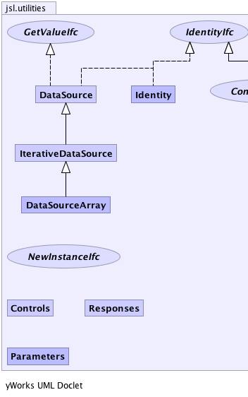
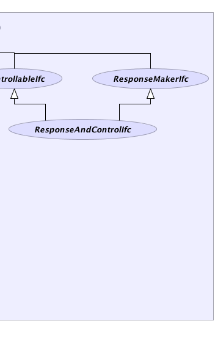

|
||||||||||
| PREV PACKAGE NEXT PACKAGE | FRAMES NO FRAMES | |||||||||
| Interface Summary | |
|---|---|
| ControllableIfc | Implementors of this interface should be able to return an instance of the Controls class and should be able to take in an instance of Controls and use it correctly to set the internal state of the implementation. |
| GetValueIfc | Represents a general interface for returning a value |
| IdentityIfc | |
| NewInstanceIfc | |
| ResponseAndControlIfc | |
| ResponseMakerIfc | Implementors of this interface should be able to return an instance of the Responses class or null |
| Class Summary | |
|---|---|
| Controls | This class acts like a Map to allow named controls and their associated values to be viewed and set. |
| DataSource | |
| DataSourceArray | |
| Identity | |
| IterativeDataSource | An abstract base class for modeling data sources that users can iterate through |
| Parameters | |
| Responses | This class acts like a Map to allow named responses and their associated values to be viewed. |
|  |  |
|
||||||||||
| PREV PACKAGE NEXT PACKAGE | FRAMES NO FRAMES | |||||||||